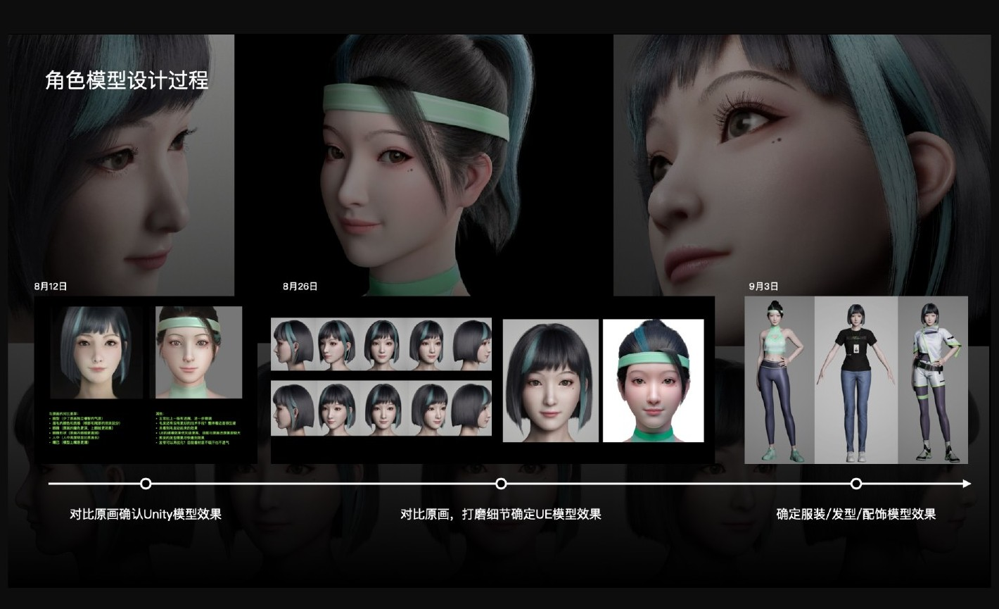
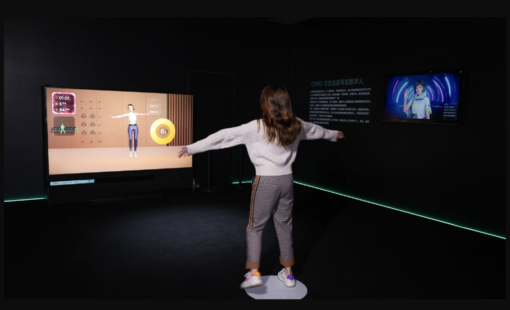
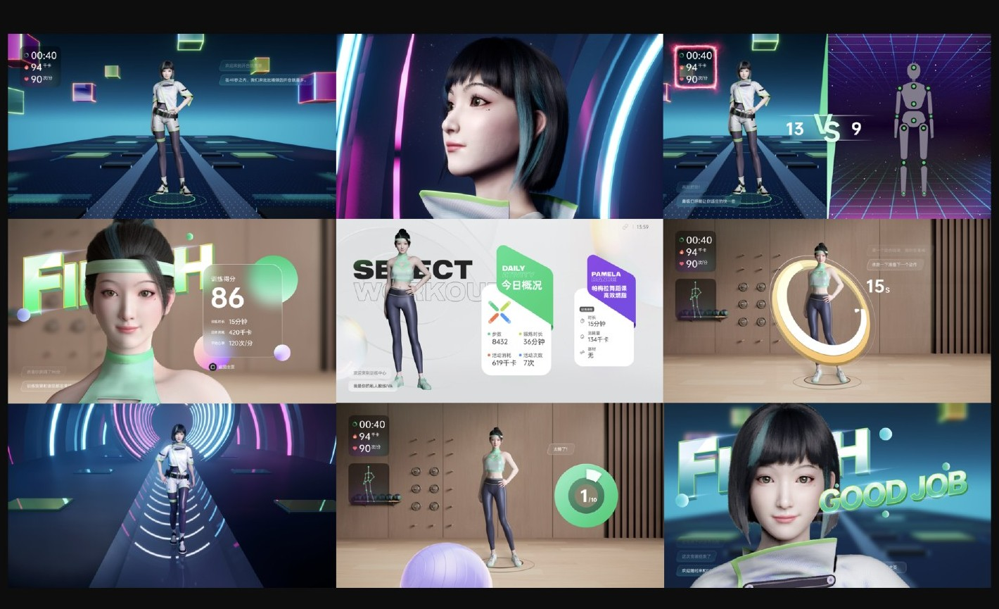

01
从人物设定建立角色识别
角色设计涉及面部、发型、服装与整体气质。作品集展示了形象比较与迭代，让不同设定在统一的视觉方向下得到检验。
这些探索建立角色的辨识度，也为后续场景和交互表达提供视觉基础。

02
让角色进入真实的体验空间
角色通过屏幕进入真实空间，用户的身体动作、角色反馈与现场呈现共同构成体验。
作品中的现场演示展示了参与者与虚拟角色之间的关系：角色形象需要与界面、动作和空间呈现一起被理解。

03
把形象延展为可参与的体验
不同界面围绕同一角色展开，从人物呈现延伸到选择、动态反馈和场景表达。
作品集将这些界面并置，呈现角色视觉在不同使用环节中的一致性，以及互动内容的变化。
图文依据：LIYOU PORTFOLIO 2024，第 85—90 页。
NEXT / 全部作品 ↗